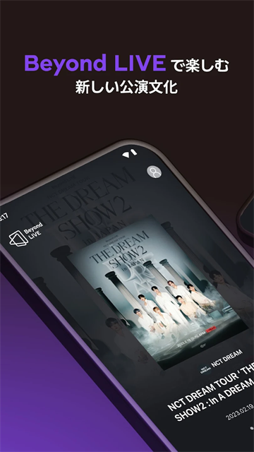
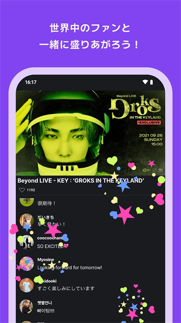

期末周攒了两周零花钱，我第一次在 Beyond LIVE 里"上了舞台"
一个 KPOP 狗期末周熬夜蹲 NCT 127 Beyond LIVE 的真实夜晚——从抢票、调设备到 Multi-View 切镜头、Fan Board 上墙，聊一聊这个软件到底哪里不一样。
期末周的深夜，我在宿舍走廊里蹲 Beyond LIVE
凌晨两点的宿舍楼安静得不像话，室友的呼噜声穿过隔帘，我攥着手机在走廊尽头的消防栓旁边坐着——充电线不够长，只能把笔记本抱到膝盖上，耳机音量调到 30%，不敢开外放。
这是我攒了两周的早餐钱和奶茶钱，加上一点原本打算买复习资料的预算，才凑出来的一张 Beyond LIVE 门票。演出是 NCT 127 的 Neo City 首尔场，Beyond NEXT 板块上那张卡片我盯了整整三天，从预售开售一直刷新到正式售票，差一点就抢不到。
我得说，Beyond LIVE 这个软件一开始让我有点懵。界面不像国内的直播 App 那样直接，第一次打开官网首页 Beyond NEXT 那一排卡片时，我甚至不确定自己点的是对的那一场。演出详情页上密密麻麻列着 Streaming Date、Sales Period、Concert Type、Supported Languages、Resolution——还有一行特别扎眼的"Multiple Devices: 2"。我那时候还没搞懂这两个设备额度是什么意思，后来才知道不同浏览器会被认成不同设备，Edge 开一场 Chrome 开一场就占满了。
朋友甩过来的下载链接，是整个晚上最关键的一步
说实话如果不是同好群里有人甩了 Beyond LIVE 的下载链接，我可能还在官网注册流程里打转。那个软件叫 Beyond LIVE官网，是 SM 专门给自家艺人做的全球直播平台——NCT、TWICE、aespa 这些团的线上演唱会都在上面办。官方也推荐直接用 PC 网页看，不用装 App，大屏幕体验反而更好。
我把 Edge 更新到了最新版，按要求在演出开始前十分钟就进了虚拟场馆等着。那时候场馆里已经有人了，但主画面还在放预告 PV，右下角有一排我之前从没见过的东西——小缩略图，每张下面标着 Main、Taeyong、Jaehyun、Mark 这些名字。
Multi-View 镜头切换，我第一次没跟着导播走
演出正式开始那一刻我整个人绷住了。导播自然是跟着 C 位走的，但我本命是 Jaehyun，开场舞台他在第三排靠边的位置，导播镜头扫过去的时间总共不超过三秒。我下意识点了一下右下角那张标着 Jaehyun 的缩略图——
画面无缝切过去，声音没断。我愣了两秒，才反应过来这就是 Beyond LIVE 的 Multi-View 功能。之前刷到过但没当回事，直到自己切过去看到他的近景特写、看到汗顺着发际线往下流，才突然明白这个功能到底有多狠。
PC 网页端的缩略图是从上到下排列的，鼠标悬停就能预览实时帧，点一下就切。手机端横屏的时候缩略图在右侧竖排，体验差不多但屏幕小很多。我宿舍那张破床的上铺栏杆刚好能架住笔记本，我就那样半躺着，从头到尾跟着 Jaehyun 的镜头走，导播爱切谁切谁。
唯一踩的坑是中途我切来切去太频繁了——从 Jaehyun 切到 Mark 又切回主舞台又切回 Taeyong——然后画面突然卡了。后来翻Beyond LIVE文档才知道客户端后台只预缓存两三路流，疯狂切换就每一路都要重新拉流，卡是必然的。选好本命镜头就老实待着，高潮段落如果导播切走了再手动切回来，这才是正确姿势。

Fan Board 粉丝墙，我真的出现在了舞台背景上
演出过半的时候我注意到聊天区旁边有个按钮，写着 Fan Board。我好奇点了一下，允许 Beyond LIVE 用我的昵称和头像——然后等了大概三十秒，退出直播间再进来的时候，我突然发现舞台背景的 LED 墙上有一个滚动的头像墙，密密麻麻全是粉丝的头像和昵称，在舞台后面翻涌。
那一刻我鸡皮疙瘩都起来了。弹幕和评论艺人看不到，但是 Fan Board 这个东西，是实时推到舞台上的 LED 墙上的——艺人在台上能看到这些滚动的头像。几十万个头像从全球不同的设备上传过来，在云端聚合之后推到舞台边缘节点渲染，这根本不是什么"弹幕"，这是把远程观众物理地嵌入了舞台画面的一部分。
演出最后 NCT 127 集体鞠躬感谢的时候，我盯着舞台背景那片滚动的头像墙，突然很确定我的头像就在里面的某个角落。那种感觉和发一条石沉大海的评论完全不一样——你真的"在"那里。

事后复盘：Beyond LIVE 到底值不值得？
那场演出结束已经凌晨五点了，我把笔记本抱回床上，耳机摘下来的时候耳朵嗡嗡作响。期末周熬夜确实不划算，但 Beyond LIVE 这个软件给我的体验，是国内任何一个直播平台都没做到的。
它的 Multi-View 让我不再被动跟着导播走，Fan Board 让我不只是一个"观众ID"而是真的出现在了舞台上，PC 网页端的体验也足够流畅——最低 20 Mbps 带宽就能跑 1080P，我宿舍那台 50 兆的校园网全程没怎么卡。当然也踩了一些坑：两个设备额度的限制我后来用 Safari 试了才搞明白，不同浏览器算不同设备；演出开始前一定要提前十分钟入场，不然可能挤不进去。
之后我又用 Beyond LIVE 看了 aespa 的后续几场演出，每一次体验都差不多——提前刷 Beyond NEXT 看预告、开场后先把所有缩略图过一遍记好机位、锁定本命镜头一路跟到底、最后开 Fan Board 让自己"上舞台"。说起来都是操作层面的小事，但堆在一起就构成了一种完全不一样的线上演唱会体验。
这套体验背后的完整资料，我整理同步到了三个仓库——GitHub、Gitee 和 GitCode，国内网络不稳定的时候可以换着看。